유기동물을 입양하고그들의 영웅이 되세요
유기동물은아직 발굴되지 않은보석입니다
버려진 동물들에게새로운 기회를 주세요
당신의 새 가족이당신을 기다립니다
내 세상의 전부는오직 당신 뿐이에요
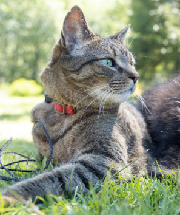
코숏 / 암컷 / 4살 / 이름 : 아랑 실종 장소 :충청북도 괴산군 승암159캠핑장 (2024-06-26)
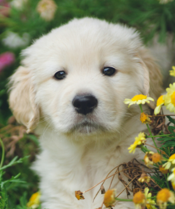
래브라도 / 암컷 / 2개월 / 이름 : 먼지 실종 장소 : 경기도 수원시 팔달구 숙지공원 부근 (2024-06-25)
비숑 / 수컷 / 1살 / 이름 : 복순이 실종 장소 : 부산광역시 사하구 신평동 동성화학 부근 (2024-06-23)
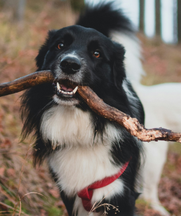
보더콜리 / 수컷 / 2살 / 이름 : 나니 실종 장소 : 충청북도 청주시 우암산 부근 (2024-06-22)
바센지 / 수컷 / 2살 / 이름 : 깐숙이 실종 장소 : 울산광역시 남구 선암동 진원그랜즈 아파트 부근 (2024-06-26)
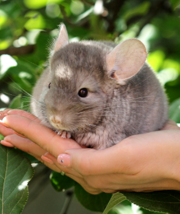
친칠라 / 암컷 / 8개월 / 이름 : 알렉스 실종 장소 : 경기도 파주시 신촌동(소라지로 139번길13)공단 근처 (2024-06-24)
믹스 / 암컷 / 4개월 미만 /사람을 매우 잘 따름 구조 장소 : 서울특별시 강서구 652번 버스 종점 (2024-06-20)
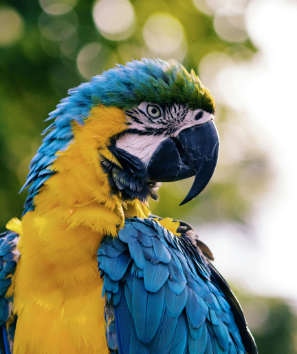
앵무새 / 성별모름 / 나이모름 / 관리가 잘 되어있음 목격 장소 : 경기도 안성시 경기도 안성시 금광면 개산리,오산리 부근 (2024-06-21)
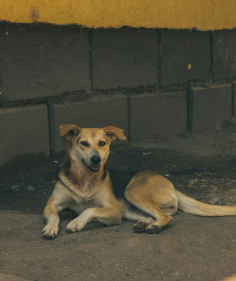
믹스 / 수컷 / 2살 미만 / 사람을 경계함 목격 장소 : 충청남도 아산시 풍기동 인정프린스 옆 공터 (2024-06-23)
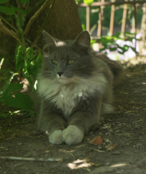
시베리안 / 암컷 / 나이 모름 / 하루 종일 욺 목격 장소 : 전라남도 순천시 해룡면 세븐일레븐 유아숲점 부근 (2024-06-24)
포인터 / 암컷 / 1살 미만 / 활발함 구조 장소 : 경기도 화성시 병점 중심상가 부근 (2024-06-24)
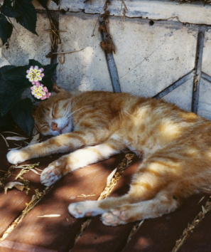
코숏 / 수컷 / 나이 모름 / 애교가 많음 구조 장소 : 제주특별자치도 서귀포시 위미항 부근 (2024-06-27)
공공장소에서 주인없이 떠도는 동물을 발견한 경우 관할 시군구청 또는 동물보호센터에 신고하시기 바랍니다.
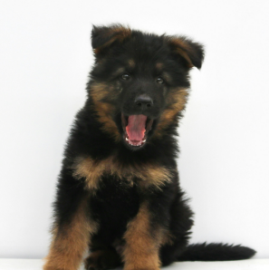
왕자 수컷(중성화 O) 5개월 / 4.7kg / 블랙&브라운
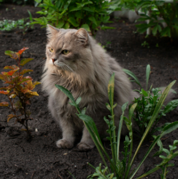
벨리 암컷(중성화 O) 9살 / 5.5kg / 베이지
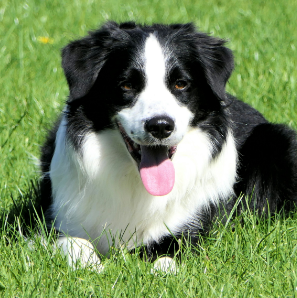
베라암컷(중성화 O)6살 / 13kg / 블랙&화이트
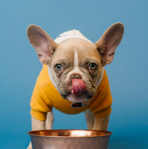
모과수컷(중성화 O)2살 / 5kg / 베이지&화이트
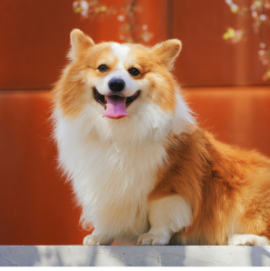
뽀뽀암컷(중성화 O)2살 / 11.5kg / 브라운&화이트
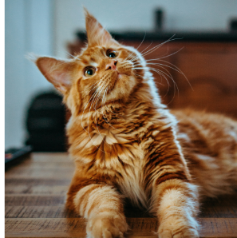
씨엘암컷(중성화 O)5살 / 6kg / 옐로우
라또암컷(중성화 O)4개월 / 2.5kg / 그레이
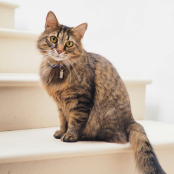
비바암컷(중성화 O)6살 / 4kg / 브라운